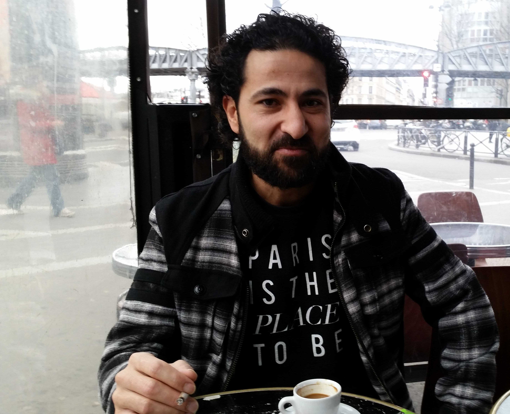

Comme tous les réfugiés syriens arrivés en France, les artistes doivent se démener pour poursuivre leur activité créatrice. En s’efforçant d’éviter un écueil propre à leur vocation : que leur public les perçoive davantage comme Syriens que comme artistes.
« Je suis un artiste. Quitte à manger de la merde, je ne me vois pas faire autre chose. » Dino Ahmad Ali a 31 ans, un regard sombre et déterminé, et dans un français parfaitement maîtrisé, argot compris le plasticien syrien balaie toute concession. Il est arrivé en France le 15 mars 2011, jour de la première manifestation contre le régime syrien, à Damas. Le début de la révolution syrienne, le premier jour d’un séjour d’études qui s’est peu à peu transformé en exil.
Les premiers mois, Dino Ahmad Ali s’efforce d’apprendre le français. Au moment où il décide de rejoindre la capitale, le régime syrien lui supprime sa bourse, le laissant sans ressources. Aujourd’hui, le jeune Syrien a obtenu son statut de réfugié, et mène de front recherche universitaire et création.
L’élan artistique est là. En partant à la rencontre de ces Syriens exilés, un point commun se dégage rapidement.Comme Dino Ahmad Ali, tous considèrent qu’ils n’ont pas le choix, que redevenir artiste n’est pas une option. En comparaison des nombreux réfugiés échoués sans ressources sur les routes et dans les camps d’accueil d’Europe, ces Syriens se considèrent comme privilégiés. Pourtant, leur parcours est rarement linéaire. Pour remplir leur mission – exprimer par l’art l’expérience de la vie, de la mort, de la guerre en Syrie – ils doivent puiser la matière de leurs œuvres dans une réalité qu’ils ont fui ou qu’ils connaissent à distance.
Leur relation au pays natal demeure souvent aussi douloureuse qu’inévitable. Paradoxalement, ils tiennent cependant à dépasser l’étiquette d’artiste en exil, une case trop réductrice qui les enfermerait dans un statut de simples témoins. Mais pour cela, il leur faut aussi réussir à s’extraire du lot commun à tout réfugié, les conditions matérielles difficiles comme les barrières administratives ou psychologiques. Un retour à l’art semé d’embûches.
Être utile dans l'exil
La vision qu’Ossama Mohammad a de son métier n’a jamais bougé d’un iota. Réalisateur syrien reconnu et primé à Cannes en 2002 pour The box of life , à presque 62 ans, il n’a que quatre films derrière lui. Le perfectionnisme du cinéaste et son rejet de tout compromis face à la censure du régime en fournissent l’explication. S’exprimant en anglais avec la lenteur de celui qui est habitué à peser ses mots, le cinéaste aux cheveux blancs évoque sa première réunion avec des amis comme lui en exil en France : « Nous voulions savoir comment être utile depuis la France. Je me souviens avoir dit : nous ne sommes pas des victimes, nous sommes en vie. Mais nous n’avons pas le droit pas oublier les victimes. Nous devons continuer notre art et réaliser de vraies œuvres. Nous ne voulons pas pousser les Français, les Européens, les Américains à dire « oh, ces pauvres gens, ils parlent de leurs problèmes ».»
En 2011, au moment même où commence la révolution syrienne, Ossama Mohammad est invité à Cannes pour participer à un débat sur le cinéma et la dictature. Pour éviter de s’exposer à l’arbitraire d’un pouvoir qui se durcit de manifestations en répressions, il décide de rester en France avec sa femme, Noma Omran, cantatrice et compositrice. Aujourd’hui, ils continuent de refuser le statut de réfugiés, par souci d’assumer le choix d’être resté et ses conséquences.
Pour redevenir artiste, s'accrocher à ses rêves
Rami Khalaf, lui, a fini par obtenir le statut de réfugié il y a un peu plus d’un an. Cela n’est d’aucune aide pour vivre de son métier de comédien. « Être artiste en France, c’est déjà pas facile, mais quand on est réfugié syrien, c’est hyper difficile. C’est très très difficile, martèle-t-il. Mais on n’a pas le choix. » A 32 ans, l’homme a le rire facile et le sourire contagieux. Depuis deux ans et demi, il vit en France. Lors de la rencontre à la terrasse d’un café parisien, dans le XXe arrondissement, il arbore un t-shirt noir où l’on peut lire : « Paris is the place to be ». « Mais acheté à Berlin, c’est plus drôle » , s’amuse-t-il.
Après le début de la révolution, il est resté en Syrie un an et demi. Les premiers temps, quand il se faisait arrêter après des manifestations, son statut d’artiste lui servait de sauf-conduit. Puis la situation a empiré. Il est parti. En Italie d’abord, puis en Suède, avant d’être expulsé vers l’Italie et finalement d’atterrir en France. Il a beaucoup d’histoires à raconter, comme tous les Syriens selon lui. Il évoque avec pudeur un frère dont il est sans nouvelles depuis trois et demi, détenu par le régime pour avoir pris part aux manifestations, comme lui, comme tant d’autres. Un frère peut-être mort. A la fin de l’entretien, une phrase lapidaire vient répondre à celle de son t-shirt. « C’est horrible, en Syrie. » Lui-même s’estime chanceux. Il est entouré d’amis, il a rencontré sa femme en France. Et il s’accroche à son espoir : « Même s’il y a des situations économiques difficiles, il faut essayer de redevenir comédien.»
Même si cela nécessite de se jeter à l’eau sans savoir nager. En janvier 2015, Rami Khalaf joue dans une adaptation de La Nuit juste avant les forêts, de B.M. Koltès, au théâtre de la Menuiserie, à Pantin (93). « J’ai appris mon rôle par cœur… et je ne comprenais pas tous les mots que je disais. » A ce moment-là, le comédien ne maîtrise pas encore le français comme il le fait maintenant, soignant sa prononciation jusqu’à rectifier de lui-même certaines liaisons. Fin 2013, il obtient l’asile en Italie, lorsqu’il déniche une place dans une radio syrienne, Rozana, basée dans le quartier parisien de Montmartre. Pendant un an et demi, il y travaille comme journaliste. « Je ne parlais que syrien, je ne voyais que des Syriens. Chaque jour, parler des rues que tu connais très bien, où il y a des morts partout, des morts tous les jours. J’étais en dépression.» Il démissionne et se met au français, avec sa femme, ou tout seul chez lui, de manière intensive.
« J’ai appris mon rôle sans comprendre tout ce que je disais. » (Rami Khalaf)
Photographie ci-contre: Rami Khalaf dans un café parisien

Pour se remettre à créer des œuvres, certains doivent se faire violence. « Je n’étais pas du tout venu en France pour faire du théâtre, ça me semblait absurde. » Waël Ali est un dramaturge et metteur en scène né en 1979. Il vient en France dès 2007, pour poursuivre des études théâtrales à Lyon. « Faire du théâtre en exil, cela signifie sortir de mon imaginaire de référence. Pour moi, le théâtre, c’est forcément lié à ma ville, à ma culture, à ma langue. Ici, je ne connais même pas le public qui va venir. »
Quand la révolution éclate dans son pays, sa vie d’étudiant s’arrête. Il n’est toujours pas question de faire du théâtre en France, il attend et espère l’ouverture du pays. « Mais la situation s’est prolongée. Alors en 2013, j’ai commencé à penser à faire du théâtre en France. Parce que cela permet d’avoir un autre regard sur le réel ». En transformant une situation intolérable en pièce, en la mettant en scène, Waël Ali refait de son art un besoin. En 2014, il crée Je ne m’en souviens plus, une pièce qui met en scène un ancien prisonnier politique, exilé en France depuis plus de quinze ans. Un musicien, torturé et emprisonné pendant huit ans, qui verra lui aussi l’espoir s’effondrer peu à peu à partir de 2011. Une pièce jouée à Beyrouth d’abord, comme un ancrage dans une réalité connue, puis à Berlin, à Anvers, à Paris.
Photographie ci-contre: Waël Ali, au théâtre Confluences
Bande-annonce d'Eau argentée , le film d'Ossama Mohammad
Jusqu'où peut-on montrer l'horreur
Pour réaliser son film, le réalisateur Ossama Mohammed sait qu’il a eu la chance pouvoir compter sur le soutien de professionnels. Dans son entourage gravitent des distributeurs et des producteurs comme Serge Lalou, un ami de longue date qui a produit plus de trois cents cinquante films et documentaires. Soutenu et même poussé par eux, il a pu coréaliser Eau argentée, Syrie autoportrait, sorti en décembre 2013. Le documentaire se compose « de mille et une images prises par mille et un Syriens et Syriennes ». Ossama Mohammed a tissé des images filmées par sa coréalisatrice, une jeune Kurde restée dans la ville de Homs, des vidéos récupérées sur YouTube, et ses propres plans réalisés à Paris. L’œuvre saisit la beauté et la fragilité de la vie en Syrie, malgré les bombes, les snipers, et les champs de ruines.
Pour le réalisateur, il n’y a aucune comparaison possible entre son travail en Syrie et en France. « Ici en France, il y a beaucoup de concurrences. Ce n’est pas facile, surtout pour les jeunes réalisateurs. Mais si tu as les bons amis, c’est plus facile. En 2010, je préparais un film de fiction, avec Arte. Avec la révolution, tout a changé. J’ai parlé avec mon producteur Serge Lalou, on a eu un rendez-vous avec Arte, et le matin même on changeait le projet. En Syrie, faire un film, c’était une guerre de tous les instants, contre la censure, contre les compromis. Et à la fin, ton film pouvait être interdit. »
Tous n’ont pas la chance de bénéficier des mêmes relations. Le comédien Rami Khalaf est même assez amer vis-à-vis du fonctionnement du théâtre français. « En Syrie, pas besoin d’être un bon comédien pour travailler, mais il faut connaître les gens, le réseau. C’est presque la même chose ici, c’est très rigide, il y a trop de bureaucratie. Quand j’ai quitté mon travail à la radio pour redevenir comédien, j’ai envoyé mille emails à des agences artistiques. Ça n’a rien donné. »
Réseau et amitiés, les piliers du succès
C’est grâce au réseau informel qu’il a joué dans la pièce de Koltès. « Le metteur en scène était le copain d’une de mes amies. » Actuellement, Rami Khalaf tente de monter une pièce qu’il est en train d’écrire, qu’il appelle provisoirement les « petites histoires de la Syrie d’Assad ». « Le directeur du Théâtre Gérard Philippe de Saint-Denis, que j’ai rencontré par hasard, est intéressé pour la monter avec des comédiens syriens qui vivent en France. J’en connais au moins sept à Paris qui sont passés comme moi par l’institut des arts dramatiques de Damas. Il m’a expliqué que d’habitude ça ne fonctionne pas comme ça. Ils connaissent déjà les troupes ou les spectacles avant de les programmer. »
Intégrer le fonctionnement des institutions culturelles françaises fait partie du bagage nécessaire aux artistes en exil. Dino Ahmad Ali reconnaît sa carrière artistique s’est lancée lorsqu’il a décidé de venir à Paris. « Au début, j’étais souvent catalogué comme artiste syrien. L’art de la révolution, pour laquelle j’ai fait des affiches, faisait l’actualité. Mais ensuite, mes expositions et les événements auxquels je participe ont été de moins en moins centrés sur la Syrie. » Depuis un ou deux ans, il présente ses œuvres, qui jouent beaucoup sur les illusions d’optiques, dans des galeries d’art, à l’institut du Monde arabe, mais aussi dans des lieux moins institutionnels, comme Le Chêne à Villejuif, un centre de création alternatif.


Ci-dessus, l'oeuvre hypnotique de Dino Ahmad Ali
Parvenir à retrouver une activité créatrice en France implique souvent une intégration au petit milieu solidaire que ces artistes ont su reconstruire loin de leur pays natal. Vernissages, projection de films ou débats organisés par des associations, tout événement culturel où l’un d’eux présente son travail permet de reconnaître les mêmes visages. Du 4 février au 11 mars 2016, la galerie Europia, dans le 7e arrondissement, rassemble treize artistes syriens, peintres, sculpteurs, photographes, plasticiens dont Dino Ahmad Ali pour une exposition intitulée Ego partagé.
Cette opportunité de montrer leur travail, ils la doivent à la galeriste Nada Karami Zreik, syrienne elle aussi et en France depuis treize ans. « J’avais déjà la galerie, mais avec la révolution de 2011, je me suis dit qu’il fallait ouvrir mon espace d’exposition aux artistes syriens. Je n’expose plus qu’eux. » Elle explique que ce changement a eu un réel impact sur sa clientèle. « Lorsque les acheteurs cherchent des tableaux pour décorer leur salon, et que beaucoup d’œuvres mettent en scène la guerre, la violence, la mort… C’est compliqué. Certains se sont plaints. Aujourd’hui, je vends surtout à des collectionneurs et des artistes qui veulent exprimer leur soutien aux exposants. »
Photographie ci-contre: Nada Zreik, dans sa galerie Europia
Du 11 février au 19 mars, le théâtre Confluences, dans le 20e arrondissement de Paris, organise un festival, « Péril(s) – Syrie ». Judith Depaule, directrice artistique du lieu, raconte qu’elle a contacté les artistes en s’appuyant sur des associations d’aide aux Syriens, puis sur les conseils des premiers artistes rencontrés. Si bien que les cercles se recoupent. Dans le hall de ce petit espace associatif, peuvent se croiser Waël Ali qui y joue sa pièce, le réalisateur Oussama Mohammed et le comédien Rami Khalaf, venus pour un vernissage ou un débat.
Ces événements permettent de resserrer les liens, de mûrir d’autres projets, mais aussi de mieux soutenir ceux qui en ont besoin. Le théâtre Confluences a organisé une journée de rencontres professionnelles entre des artistes syriens et l’Office national de diffusion artistique (Onda). Subventionnée par le Ministère de la Culture, cette institution encourage la création de spectacles vivants contemporains. L’action était encore récemment réservée aux artistes français. Depuis septembre 2015 et l’afflux massif de réfugiés syriens en Europe, l’Onda s’est penché sur la situation des artistes en exil. Le constat est simple : les artistes syriens n’ont pas vraiment connaissance du réseau culturel français et ne comprenne pas toujours son fonctionnement administratif.
Dépasser l'actualité médiatique
« A Paris surtout, la vie artistique est très riche. Ce n’est pas toujours facile d’exposer, mais si tu exposes, tu peux vendre, constate Dino Ahmad Ali. Je reviens de Berlin, beaucoup de projets naissent là-bas, mais c’est plus compliqué d’en vivre il me semble.» Grâce à ses pérégrinations, le comédien Rami Khalaf a pu comparer plusieurs pays. Selon lui, en Italie, en Suède, les opportunités théâtrales sont moindres. En revanche, quitter Paris pour Berlin lui semble préférable à terme. « J’y ai des amis, la communauté syrienne y est plus nombreuse, plus structurée. J’aimerais bien y aller un jour, c’est une ville parfaite pour travailler comme comédien. Mais il faudra tout recommencer pour la langue.» Et prolonger l’errance.
« A terme, je préférerais aller à Berlin » (Rami Khalaf)
L’Onda se défend toutefois de soutenir des artistes simplement parce qu’ils sont réfugiés. L’exigence de qualité demeure première. Les Syriens eux-mêmes regrettent souvent d’être étiquetés comme artistes syriens ou artistes en exil. Waël Ali, le metteur en scène, reconnaît une forme de paradoxe. « Avec le contexte médiatique, il est certain qu’il peut y avoir un effet de mode, pour des thèmes qui garantissent de l’empathie du spectateur.» Pourtant, il reconnaît que son travail en France lui semble parfois « trop politique », car les artistes et les intellectuels ont selon lui le devoir d’examiner ce qu’il se passe en Syrie depuis 2011.
Des artistes privilégiés mais pas épargnés
Dino Ahmad Ali souligne que le public peut considérer son travail « comme de l’art politique, ou juste de l’art, ou encore de simples effets visuels. » Il travaille sur le thème de l’enfermement, physique et psychique, depuis que des amis arrêtés et emprisonnés par le régime lui ont raconté comment, depuis l’intérieur de la prison, ils continuaient à organiser des manifestations. Lui-même a passé six jours dans six prisons différentes, enfermé à tort pour défaut de service militaire alors que ce son statut d’enseignant aux Beaux-Arts l’en dispensait. « Mais ceux qui ne connaissent pas mon parcours peuvent voir des choses très différentes. »
« Beaucoup de gens dans le monde artistique veulent travailler avec des Syriens, explique le comédien Rami Khalaf, parce que ça fait vendre. Mais pour lui, la situation en Syrie reste la chose la plus importante dans sa vie, un sujet impossible à laisser de côté. En fait je n’ai pas le choix. Avec les Syriens qui meurent tous les jours, la révolution dans une situation critique, les réfugiés en Europe qui dorment dehors, qui ne travaillent pas, est-ce que je peux travailler sur des histoires d’amour en Syrie ? »
« Avec les gens qui meurent en Syrie tous les jours, comment parler d'amour ? (Rami Khalaf) »
Ces artistes syriens sont souvent diplômés, issus de couches sociales relativement aisées. Ossama Mohammad, le cinéaste, reconnaît que son exil en France était facilité par plusieurs raisons. « Nous venions souvent en France avant 2011. Je suis allé à Cannes plusieurs fois, ma femme a donné des concerts au Théâtre de la Ville, a fait des tournées. Nous ne sommes pas de pauvres réfugiés, qui n’ont rien, pas même un canapé. Mais honnêtement, au début, il était difficile de faire abstraction des soucis de la vie quotidienne. Et psychologiquement, nous ne pouvions rester indemnes face aux conditions de vie en Syrie. » S’exprimer par l’art devient alors un moyen d’échapper à l’insidieuse mauvaise conscience d’être à l’abri quand ses compatriotes ne le sont pas.